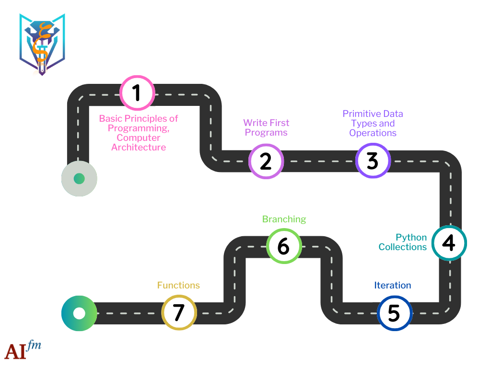

Python Core#
In the second bootcamp, you will learn the fundamental concepts of programming in Python. These include data structures, iteration, branching, and functions. At the end of the bootcamp, you will have a good overview of the main elements of programming in Python. You will also begin to write your first Python programs using the Profession Development Environment learned in the first bootcamp.
{kind=link}
Learning Path#
{kind=link}
Learning Objectives#
1. Understand the Basic Principles of Programming and Computer Architecture
This objective focuses on introducing students to the principal concepts of programming and the core componets of a computer system.
2. Write First Programs in Python
This objective focuses on guiding students to write their very first Python programs. They will learn how to create simple scripts, execute them, and understand basic programming concepts like variables, input/output operations, and comments in Python.
3. Learn about Primitive Data Types and Operations
Students will explore the fundamental data types in Python, such as integers, floats, booleans, and strings. They will learn how to use these data types and perform basic operations like arithmetic, string concatenation, and type conversion.
4. Learn the Basics of Python Collections
Students will be introduced to Python’s built-in collection data types: lists, tuples, sets, and dictionaries. They will learn how to create, modify, and use these collections for storing and organizing data in their programs.
5. Learn about Control Flow and how to Perform Iteration
This objective covers the concept of control flow in programming. Students will learn how to use loops (like for and while loops) to iterate over collections or repeat tasks. They will understand how iteration is a fundamental aspect of automation in programming.
6. Learn how to use Control Flow through Branching
Students will learn about branching in Python using conditional statements like
if,elif, andelse. This section will teach them how to create decision-making processes in their programs, allowing for different execution paths based on conditions.
7. Learn the Basics of Writing Python Functions
In this objective, students will be introduced to the concept of functions in Python, which are blocks of reusable code designed to perform a specific task. They will learn how to define a function using the def keyword, followed by a function name and parentheses. The course will cover writing simple functions that take arguments (inputs) and return values (outputs).